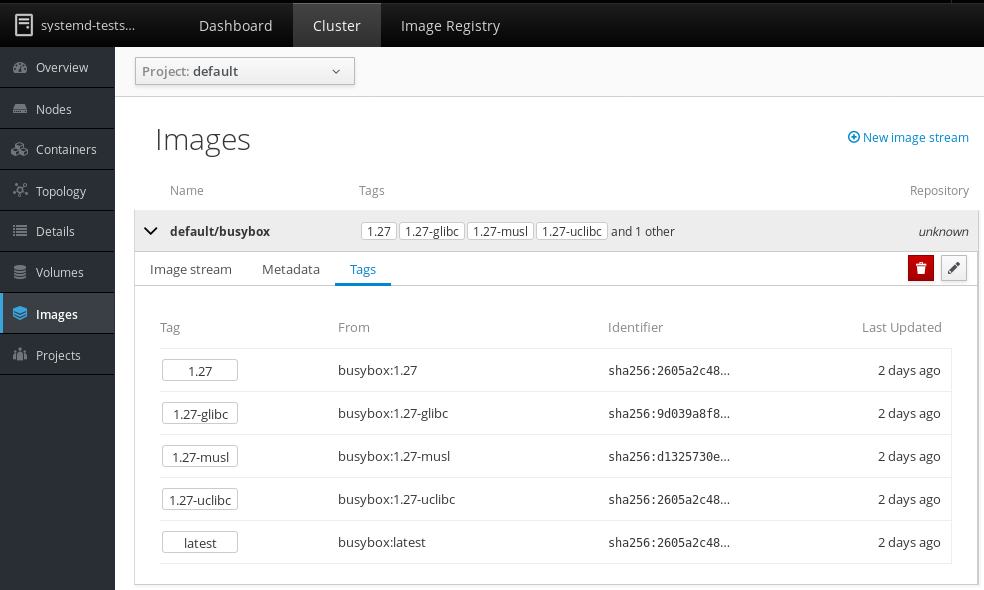
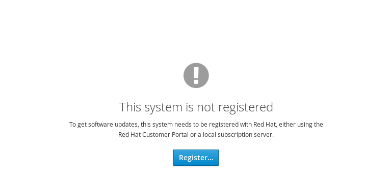

Cockpit is the modern Linux admin interface. We release regularly. Here are the release notes from version 148.
Support Cockpit in Internet Explorer
When using Microsoft Windows Internet Explorer, navigating between pages and various other operations caused lost state changes, flickering, and lots of JavaScript errors. These have been corrected, and automatic tests now run with Internet Explorer as well.
Update Cluster/Registry design for image streams
The design of the image streams on the Cluster and Registry pages has been updated to match the design of the current OpenShift Web Console.

Delete OpenShift session tokens on logout
If the Registry Console or Dashboard creates a new OpenShift session token on login, it will now delete that token again on logout. This behaviour now matches what the OpenShift Web Console does.
Detect unregistered RHEL systems on Software Updates page
On RHEL systems which have not yet been registered or whose registration expired, the Software Page would previously have claimed that “the system is up to date”. Now it detects if the system is unregistered and thus cannot receive updates:

Try it out
Cockpit 148 is available now: